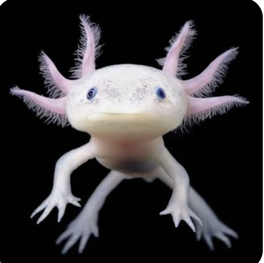
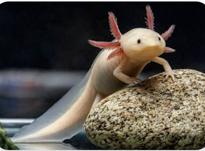
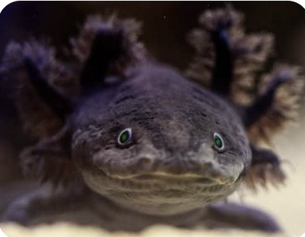
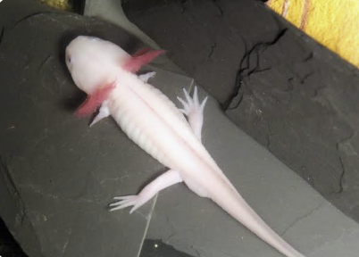
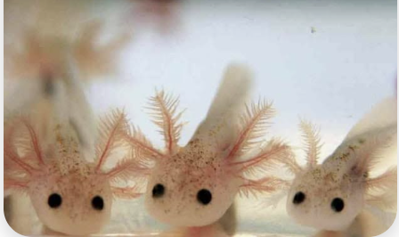

Welcome to my axolotl gallery! These pictures show axolotls and some of their interesting features. Axolotls are unusual salamanders that live in water and are famous for their incredible ability to regenerate damaged body parts.

This picture shows an axolotl and its noticeable external gills.

This picture shows an axolotl underwater, where axolotls spend their lives.

This picture gives a closer look at an axolotl's head and external gills.

Axolotls have four limbs, which are some of the body parts they are able to regenerate if damaged or lost.

This picture shows another example of the unusual appearance of an axolotl.